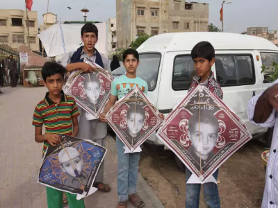

Missing Children Campaigns
Kites of Hope
Taking the cultural icon of Pakistani spring – the Kite – we transformed it into a social vehicle to reunite missing children with their families. The event was held in August 2016 at the Pavilion End Club in Karachi where we invited people to fly kites and join in the effort to recover missing children. Approximately 2,000 kites were printed with the pictures and details of missing children and the Roshni helpline number. The event drew in a large crowd, and was so successful that we had a second event soon after.
